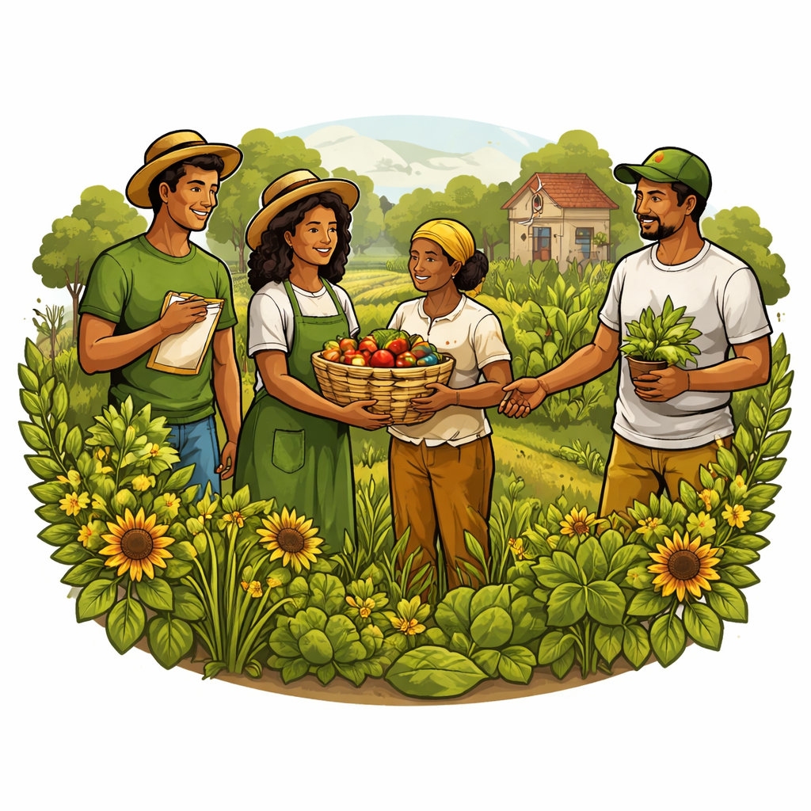

O YbáPorã é um projeto de impacto socioambiental desenvolvido em São José do Egito – PE, idealizado por um coletivo de estudantes e educadores da ETE Professora Célia Siqueira. Surgimos a partir da inquietação diante da insegurança alimentar e dos desafios enfrentados pela agricultura familiar no semiárido pernambucano. Nosso propósito é construir soluções sustentáveis que integrem produção agroecológica, responsabilidade ambiental e desenvolvimento comunitário. Atuamos de forma colaborativa, unindo conhecimento técnico, saberes populares e articulação territorial. Acreditamos que a transformação social nasce do fortalecimento das comunidades locais, do respeito à natureza e da construção de modelos produtivos mais justos e regenerativos. O YbáPorã não é apenas um projeto de produção agrícola — é uma proposta de organização coletiva que conecta campo e cidade, juventude e território, educação e prática.
Combater a insegurança alimentar e fortalecer a agricultura familiar por meio da implantação de sistemas agroecológicos sustentáveis no semiárido pernambucano.
Tornar-se referência em transição agroecológica, articulando educação, meio ambiente e economia solidária em territórios vulneráveis.
O YbáPorã atua na produção agroecológica de hortaliças, frutas, legumes e plantas medicinais, cultivados sem o uso de agrotóxicos e com base em práticas sustentáveis adaptadas à realidade do semiárido. Nosso modelo produtivo integra agrofloresta, quintais produtivos, adubação orgânica, consórcio de culturas, captação de água da chuva e manejo regenerativo do solo, promovendo equilíbrio ambiental e segurança alimentar. Além da produção, desenvolvemos cestas verdes por assinatura, oficinas agroecológicas, visitas guiadas e ações educativas voltadas tanto para a comunidade quanto para agricultores iniciantes, fortalecendo a disseminação do conhecimento e a autonomia produtiva.
O YbáPorã compromete-se com o fortalecimento do vínculo entre campo e cidade, promovendo alimentação saudável e acessível, geração de renda para agricultores familiares e incentivo à educação socioambiental. Atuamos com responsabilidade técnica e social, adotando protocolos de higiene e segurança alimentar, planejamento logístico estruturado e monitoramento constante de indicadores de impacto. Nosso compromisso também se expressa na transparência da gestão, na valorização dos saberes populares e na construção coletiva de soluções que promovam desenvolvimento sustentável, regeneração ambiental e justiça social nos territórios onde atuamos.
O YbáPorã está em processo de formalização como associação comunitária ou cooperativa social, com o objetivo de garantir autonomia administrativa e sustentabilidade a médio e longo prazo. Nosso plano de expansão prevê o escalonamento da produção, a entrada de novos agricultores e a replicação do modelo em outras comunidades, fortalecendo redes agroecológicas regionais.